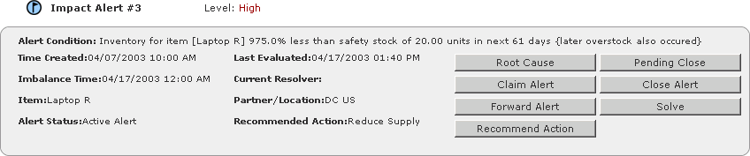

Timogen Web Site
Voice: (650) 903-9888
Fax: (650) 903-9327
info@timogen.coms
Alert Detail Page - Top Pane
The top pane, the Alert Summary pane, of both alert detail pages lists information about the Impact Alert and contains buttons to take actions on the alert.

The Alert Summary Pane includes these pieces of information about the alert:
In addition, the top pane contains several buttons, which are used to take actions against the alert. Button are enabled only for alert resolvers. They include:
· Root Cause (Impact Alerts only) - The Impact Alert may be caused by multiple event alerts. When you click on the Root Cause button, a pop-up window containing the list of event alerts is displayed. You can choose an Event Alert from the list and click Select to view this Event Alert.· Claim Alert - You can claim an alert (assign) to yourself. In other words, this makes you the current resolver for the alert. When you click on the Claim Alert button, it is assigned to you, a Note is added, and the status is marked as "In Progress".· Forward Alert - You can forward an alert to another user (with the Business User / Business Admin function). The user to whom the alert is forwarded becomes the current Resolver of that Alert.· Recommend Action - This option allows you to change the current setting of the Recommend Action field. When you click on the Recommend Action button, a pop-up window containing a list of actions to be performed is displayed. Choose an action from the list and click Submit to make it the Recommended Action for this alert.· Pending Close - You can close an alert using the Pending Close option. Click on the Pending Close button. You are prompted for the time limit upto which the alert can be ignored. The time limit is in hours and can be from 1 to 720 hours (30 days). Once an alert is marked as Pending Close, it will not be treated as an active alert and will not be listed on the Home Page. If the Alert is not automatically closed (the business data changes so the alert is not longer true) within the full period (time limit), the alert will be reactivated and the status of the alert will be changed to `Active - reacti- vated'. The Resolver can manually change the status of alert by marking the status to `Mark in Progress'. This changes the status of the alert to Active.· Close Alert - You can manually close an alert using this option. Click on the Close Alert button. A pop-up window with the following options is displayed.· Mark ClosedThis option manually closes the Alert.
· Mark Closed and Ignore With Time LimitThe Resolver can manually close the Alert and specify a time period (ignore time) during which the Alert is not evaluated. The Ignore Time is in hours and can be from 0 to 720 hours (30 days). If more than one Resolver has been assigned to the Alert, each Resolver can set a different Ignore Time.
11:05 Resolver1 says ignore for 4 hours
13:20 Resolver2 says ignore for 3 hours
16:20 ignore time expires
Total ignore time is 5:15
· Mark Closed and Ignore Time BucketsMarks the alert closed and the Timogen Adaptive Controller system ignores the specific combination of criteria that created the alert for the next number of time buckets you specify. Once the time buckets pass. alerts can be generated again for the same combination of criteria.
· Mark Closed and Ignore Execution ActionsMarks the alert closed and the Timogen Adaptive Controller system ignores the order (purchase order, manufacturing order, sales order, or transfer order) that triggered the alert.
· Solve - You can resolve the alert using any of the existing sandboxes or create a new sandbox to resolve this alert. To do so, click Solve, a list of existing sandboxes is displayed.· To use an existing sandbox, choose a sandbox from the list and click Go To Sandbox. The Sandbox screen is displayed. You can generate / execute the resolution plan here.· To create a new sandbox, click Create. You are prompted for the Sandbox Name and Description. Enter the details and click Submit. The Sandbox screen is displayed. You can define the resolution plan and generate / execute it to resolve the alert.
|
|
Timogen Systems Timogen Web Site Voice: (650) 903-9888 Fax: (650) 903-9327 info@timogen.coms |